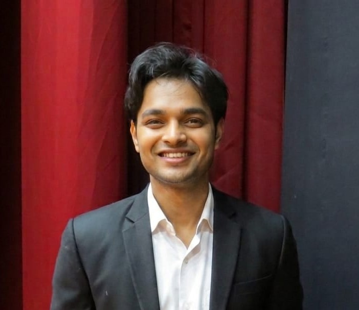

IIT Indore · Space Science & Engineering
ML Engineer · Generative AI · Voice & Vision Systems
Building intelligent systems at the intersection of space science and machine learning — from X-ray binary astrophysics to real-time voice agents and satellite imagery detection.

// 01 · About
My work spans Generative AI, LLMs, NLP, voice intelligence, and computer vision. I don't just study models — I design, train, and ship them end to end with real metrics to show for it.
Currently doing my B.Tech Project early (Animal Detection & Collision Prevention for Indian Railways), building a freelance ML portfolio, and preparing for high-impact placements in AI/ML.
When I'm not training models, I'm on stage — actively pursuing acting as a parallel career through Aaina, IIT Indore's Dramatics Club.
// 02 · Projects
// 03 · Skills
// 04 · Experience
// 05 · Positions of Responsibility
// 06 · Beyond Engineering
Engineering is what I build. But the skills that make me a better engineer come from outside it.
Through Aaina — IIT Indore's Dramatics Club — and my role as General Secretary Culturals, I've trained in something most engineers never do: how to communicate under pressure, hold a room, and inhabit a perspective that isn't your own.
Those skills show up in every client call, every technical presentation, and every time I have to explain a complex model to a non-technical stakeholder.
I believe the most interesting people live at intersections. Mine is between silicon and stage — between training neural networks and inhabiting characters.
Acting isn't a hobby for me. It's a parallel career I'm building with the same intensity I bring to ML — through Aaina, IIT Indore's Dramatics Club, daily practice, and a long-term roadmap toward professional performance.
Engineering gives me the financial freedom to pursue acting on my own terms — not out of desperation, but out of deliberate choice.
Active member of Aaina — The Dramatics Club, IIT Indore. Stage performance, direction, and communication craft.
// 07 · Contact
Open to ML engineering roles, AI research, and hard problems across Generative AI, LLMs, computer vision, and voice systems. If you're building something ambitious — let's talk.